Warm, not loud
The palette comes from embers: deep brown-black, a burnt orange for actions and gold for highlights. Fraunces gives headings a handmade feel, and DM Sans keeps the rest easy to read.
App design · Alex
A small place to tend what matters. Hearth turns a daily check-in into a tiny ritual: three kind intentions, a companion that grows with your streak, and a two-minute game when your brain needs a break.
Designed by Alex. Built with HTML, Tailwind CSS and the Canvas API. Works on phones and laptops, no account needed.
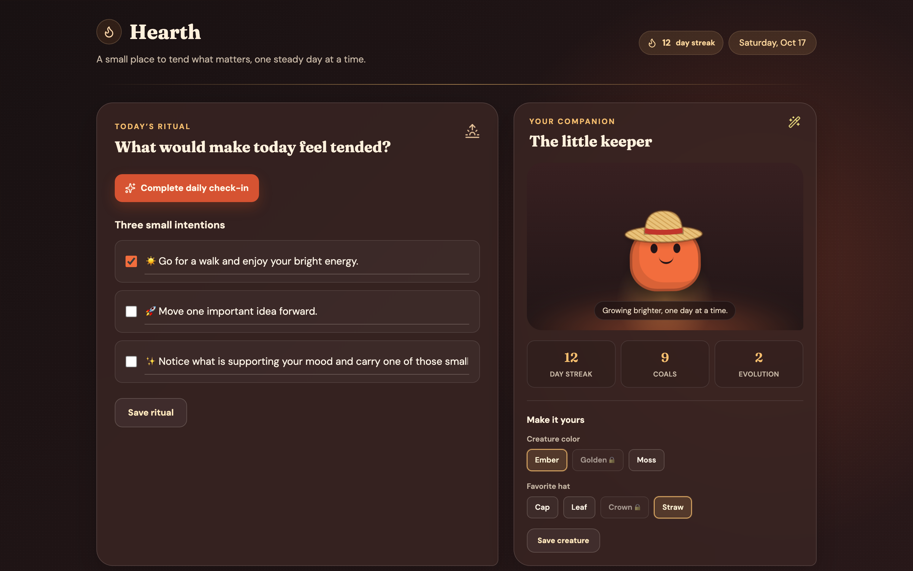
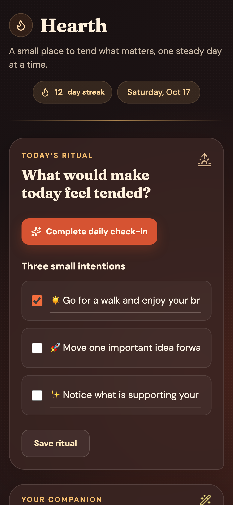
Every day starts with one question: what would make today feel tended? You get three small intentions to tick off, and a check-in button that lights the day’s flame.
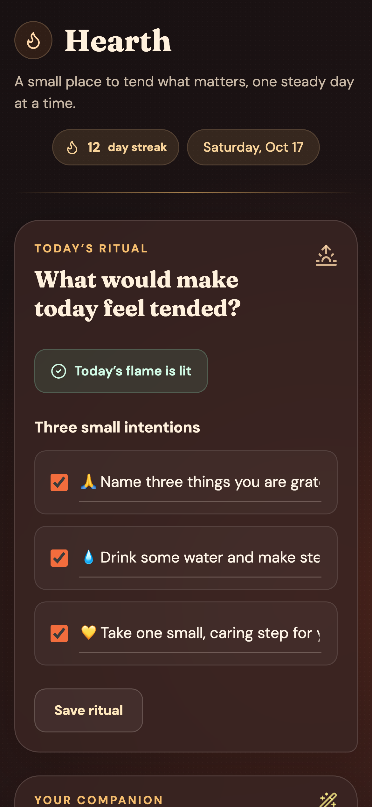
Four quick questions cover feeling, energy, stress and mood. Hearth reads the answers and writes three kinder intentions for the day, with lighter goals on low-energy days and grounding ones when stress is high.
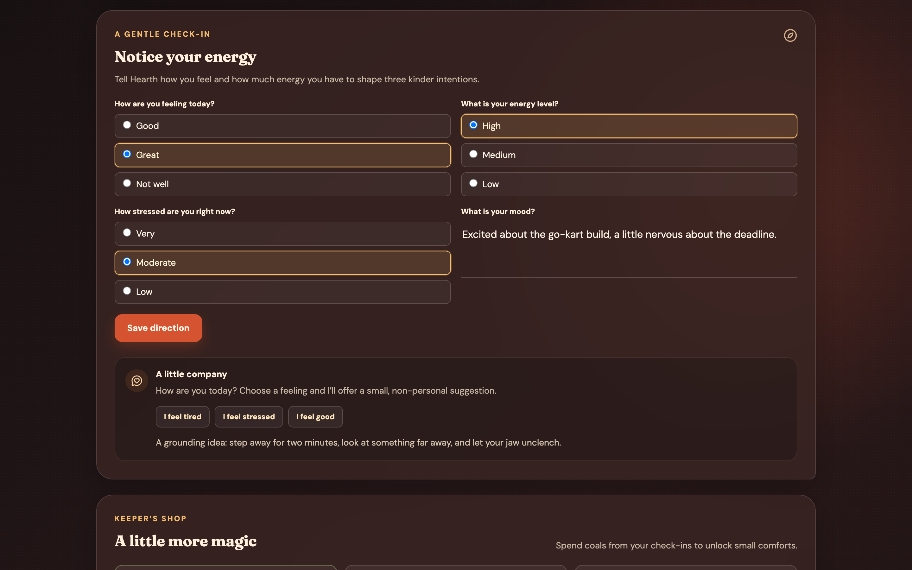
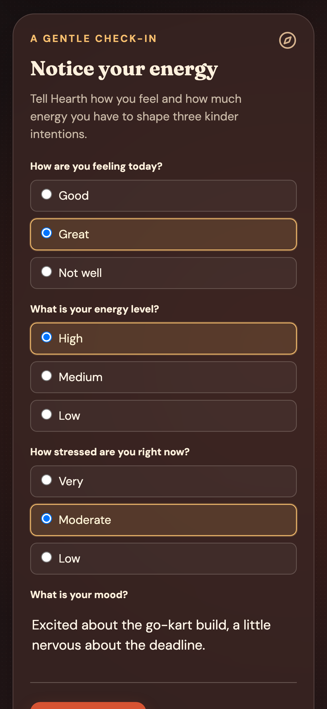
Below the check-in sits a tiny helper. Tap “I feel tired”, “stressed” or “good” and it offers one small suggestion that changes each day. It never asks for anything personal.
A companion creature that grows with you. It moves to a new evolution stage every seven days of streak, and at 28 days it reaches its glowing final form. You choose its color and hat.
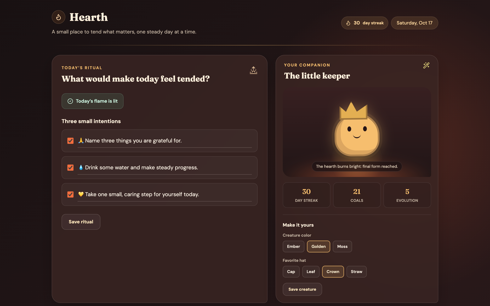

Each check-in earns a coal. You spend coals on small comforts like the Leaf hat, the Crown and a Golden glow. Locked items show a padlock until you can afford them.
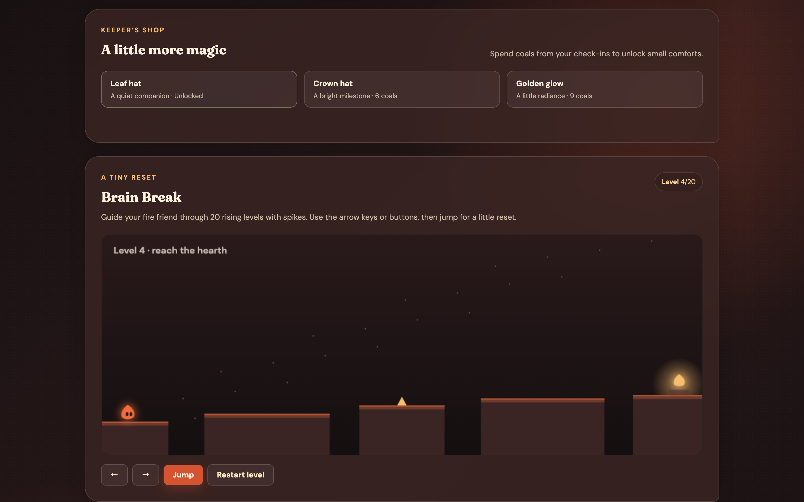
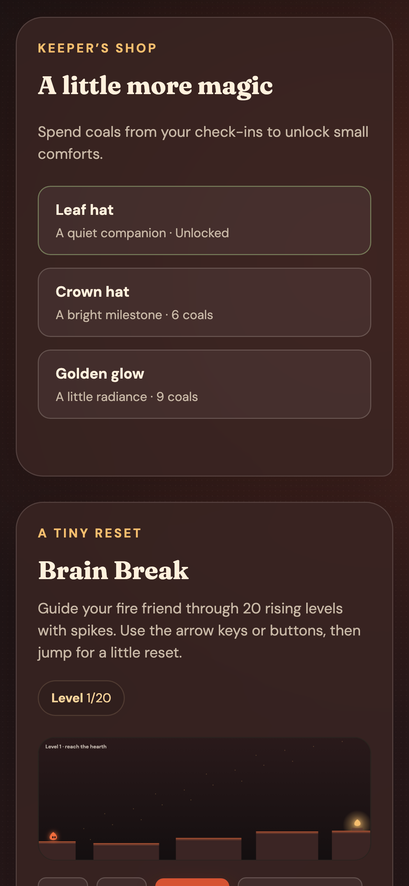
A tiny platform game for a two-minute reset. Guide your fire friend over gaps and spikes to the hearth. It runs 20 levels that get harder as you go, and the player takes your keeper’s color.
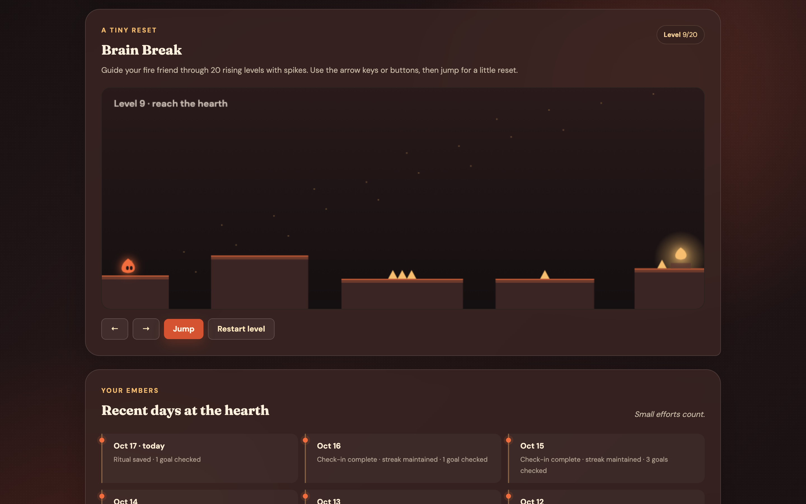
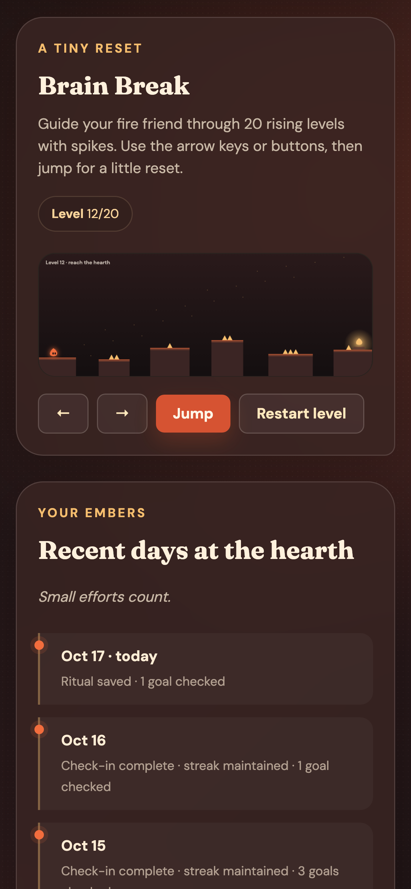
A soft timeline of the last six days shows which ones kept the streak and how many intentions you ticked. It’s there to notice progress, not to grade you.
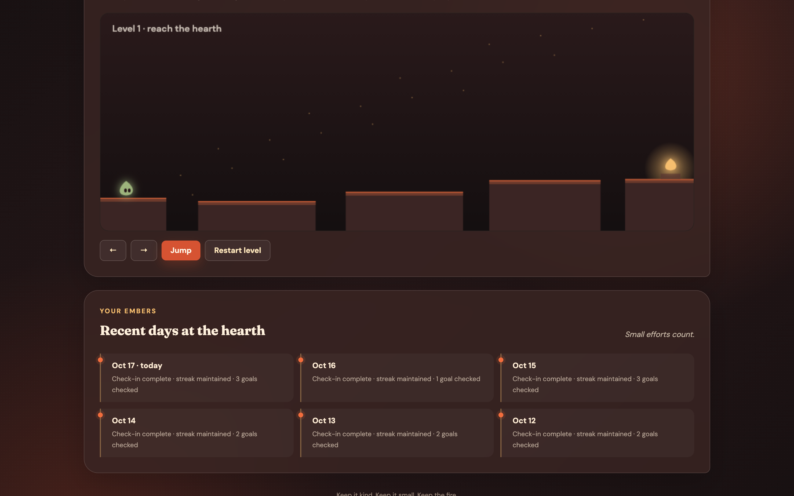
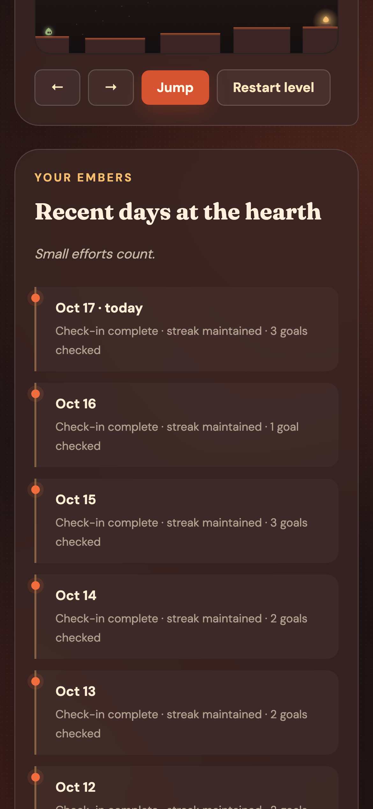
One layout, two screens
On a laptop the ritual and companion sit side by side. On a phone everything stacks into one column you can scroll with a thumb. Scroll inside the screens below to see the whole app.
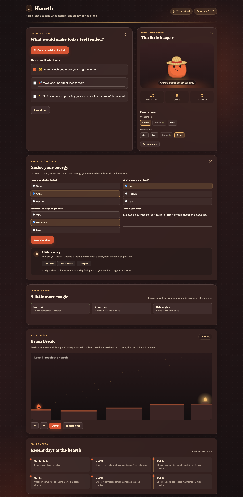
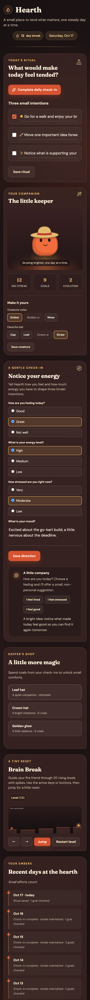
↕ Scroll inside each screen
Screenshot set
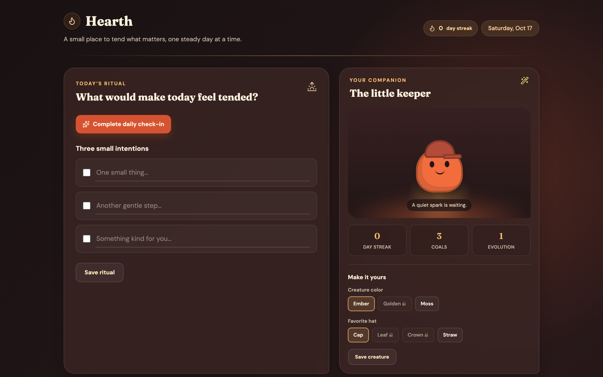
Laptop · First visit Phone · Today’s ritual Phone · Flame litPhone · The little keeper
Phone · Check-in
Phone · Shop
Phone · Brain Break
Phone · Recent days
The palette comes from embers: deep brown-black, a burnt orange for actions and gold for highlights. Fraunces gives headings a handmade feel, and DM Sans keeps the rest easy to read.
No red streak warnings and no guilt. The copy says “small efforts count.” Missing a day quietly resets the streak, and the keeper is still there waiting.
Hearth keeps everything in the browser on your own device. There are no accounts and nothing is sent anywhere. The helper’s suggestions are general, never personal.